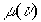
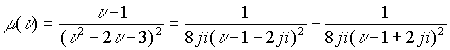
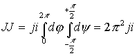

|
В. И. ЕЛИСЕЕВ ВВЕДЕНИЕ В МЕТОДЫ ТЕОРИИ
ФУНКЦИЙ ПРОСТРАНСТВЕННОГО КОМПЛЕКСНОГО ПЕРЕМЕННОГО |
|
1.7.2. Интеграл от рациональных функций.
Пусть
, где и есть многочлены степени n и m соответственноСходимость интеграла от функции
обеспечивается соотношением степеней многочленов как . В соответствии с пространственной комплексной алгеброй многочлен знаменателя разложим на произведение квадратных трехчленов, как минимальных по степени многочленов, содержащих два вида корней: два корня в плоскости (z) два корня в пространстве (При вычислении интегралов в пространстве необходимо соблюдать условия , которые обеспечивают эквивалентные разложения подынтегральной функции в области ее определения. Нахождение критических точек в пространстве зависит от области определения функции и возможности ее разложения на эквивалентные разложения. Например, если функция определена в полном пространстве , то можно не использовать эквивалентные разложения. Если
функция определена только в верхнем или только в нижнем полупространстве то нет условий для эквивалентных разложений. В первом случае условия есть , но ими можно не пользоваться, во втором случае их вообще нельзя применить. Если из полного пространства вычтена плоскость Z, то критические точки определяются из условия существования делителей нуля. Возможно существование областей, в которых содержатся не все критические точки , характеризующие эквивалентные разложения.Пример

Корни
и лежат в плоскости (z),корни илежат в пространстве ( рис 32.Многочлен разлагается на множители по двум вариантам
Второй вариант разложения в комплексном пространстве представим в виде
Разложение представлено произведением двух комплексных пространственных чисел. Радиусы этих чисел представлены корнем квадратным из исходного многочлена. Аргументы комплексов представлены функцией
arctg от одинаковых комплексов. Если переменная u =1, то произведение состоит из двух множителей, модуль каждого из которых равен 2,а аргумент соответственно .Если переменная u равна соответственно корням многочлена u =-1 или u =3 то множители превращаются в делителей нуля.Этот пример показывает, что изолированная ось делителей нуля смещается в точку
.На изолированной оси в пространстве находятся пространственные корни многочлена u 3 и u 4,а также и точки u 1 и u 2.Рис. 32. Особые точки в пространстве
Пример


Разложим функцию
на дроби в пространстве
В пространстве нуль доставляется как произведением делителей нуля так и конкретно нулем. Поэтому при разложении по второму варианту в пространстве точки
и дают нуль как произведение делителей и критические точки располагаются на изолированной оси. Это подтверждает разложение на сумму дробей. В знаменателе этого разложения нуль есть при и . При и знаменатели дробей не превращаются в нуль, поэтому рассматриваются эти точки как критические точки на изолированной оси. В этом случае имеем нуль как произведение делителей нуля.Функция
не регулярна в пространственных точках ,которые являются пространственными корнями квадратного трехчлена в соответствии с примером.Изолирование точек
Рис. 33. Эквивалентность особых точек из плоскости
Z в пространстве Y.В пространстве в соответствии с ее геометрией любая точка может быть окружена сферой из делителей нуля

Радиус
R становится коэффициентом при сфере радиуса , аргументыВ нижнем полупространстве сфера из делителей нуля около точки
образуется также из двух полусфер:верхняя полусфера образуется выделением точки ,нижняя полусфера выделением точкиЕсли точка
окружена сферой делителей нуля то при стремлении ,, то двигаясь по изолированному направлению получим точкуАналогично, если
,,Таким образом поверхность составленная из точек делителей нуля около пространственных точек, в которых функция теряет аналитичность стягивается в поверхность сферы
внутри изолированной оси и происходит пространственная изоляция точек из плоскости Z . (рис 33)Пример
где . Вычислим интеграл .
Определим
.Подставляя в интеграл получим Пределы интегрирования расставлены в соответствии с элементарной кривой  в пространстве.
в пространстве.
Пример
Вычислим интеграл
Элементарная площадка
. Подставляя в интеграл выражение функции и элементарной площадки получим.
Пределы интегрирования взяты из условия, что замкнутая поверхность
Самопересечения на пространственную кривую

Расстановка пределов интегрирования определяется аргументом
,так как он в зависимости от рассматриваемого пространства может быть действительным и комплексным в соответствии с (1.42)Мини оглавление:
[0], [1.1.1, 1.1.2, 1.1.3, 1.1.4, 1.1.5, 1.1.6, 1.1.7, 1.1.8, 1.2, 1.2.1, 1.2.2, 1.2.2.a, 1.2.2.b, 1.2.2.c, 1.2.2.d, 1.2.2.e, 1.2.2.f, 1.2.2.g, 1.2.2.h, 1.2.3, 1.3.1, 1.3.2, 1.3.3, 1.3.4, 1.3.5, 1.3.6, 1.4.1, 1.4.2, 1.5, 1.6, 1.7.1, 1.7.2, 1.7.3.1, 1.7.3.2, 1.7.3.3, 1.7.4.1, 1.7.4.2, 1.8.1], [2.1, 2.2],[3.1, 3.2, 3.3, 3.4.1, 3.4.2, 3.4.3, 3.4.4, 3.4.5],[4.1, 4.2, 4.3, 4.4],[5.1, 5.1.Рис.52, 5.2, 5.3, 5.4, 5.4.Т1, 5.4.Т2, 5.4.Т3, 5.5.1, 5.5.2, 5.5.3, 5.5.4],[6.1.1, 6.1.2, 6.2.1, 6.2.2, 6.2.3, 6.2.4, 6.2.5, 6.3, 6.4.1, 6.4.2, 6.5.1, 6.5.2],[7.1, 7.2, 7.3, 7.4, 7.5, 7.6, 7.7.1, 7.7.2, 7.8.1, 7.8.2, 7.8.3, 7.9],[8.1, 8.2.1, 8.2.2, 8.3, 8.4, 8.5, 8.6, 8.6.T1, 8.7, 8.8.1, 8.8.2, 8.8.3, 8.9.1, 8.9.2, 8.9.3, 8.10, 8.10.T2, 8.10.T3],[9.1, 9.2, 9.3, Рис.88, 89, 90, 91, 92, 93, 94, 95, 96, 97, 98, 99, 100],[10.1, 10.2, 10.3, 10.4, 10.5, 10.6, 10.7, 10.8, 10.9, 10.10, 10.11, 10.12, 10.13, 10.14, 10.15.1, 10.15.2, 10.16.1, 10.16.2, 10.17, 10.18],[11]
Размещенный материал является электронной версией книги: © В.И.Елисеев, "Введение в методы теории функций пространственного комплексного переменного", изданной Центром научно-технического творчества молодежи Алгоритм. - М.:, НИАТ. - 1990. Шифр Д7-90/83308. в каталоге Государственной публичной научно-технической библиотеки. Сайт действует с 10 августа 1998.
E-mail: mathsru@gmail.com